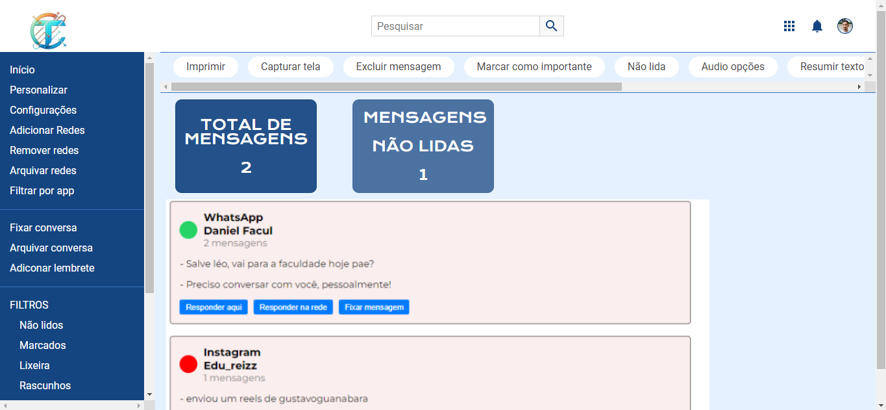

SERVIÇOS
Na TotalConect, temos orgulho de apresentar nosso principal serviço, o SOM (Sistema Operacional de Mensagem). O SOM é uma plataforma inovadora que foi desenvolvida com o objetivo de simplificar e otimizar a forma como as pessoas gerenciam suas comunicações.
O SOM é mais do que apenas um sistema é uma solução completa para a gestão de mensagens. Ele centraliza todas as suas mensagens em um único lugar, eliminando a necessidade de alternar entre diferentes aplicativos e plataformas. Com o SOM, tudo o que você precisa está ao alcance dos seus dedos.
Além disso, o SOM é ágil e eficiente. Ele foi projetado para ser fácil de usar, permitindo que os usuários gerenciem suas mensagens de forma rápida e eficiente. Isso resulta em uma economia significativa de tempo e esforço para os nossos usuários.
Mas o que realmente distingue o SOM são seus recursos impressionantes. O SOM possui uma série de recursos exclusivos que você não encontrará em nenhum outro sistema. Isso inclui a capacidade de imprimir mensagens diretamente do sistema, um recurso de resumo de texto que pode resumir textos longos e muito mais.
Na TotalConect, estamos sempre buscando maneiras de melhorar e inovar. Com o SOM, você pode ter certeza de que está escolhendo uma solução que está na vanguarda da gestão de comunicações.
